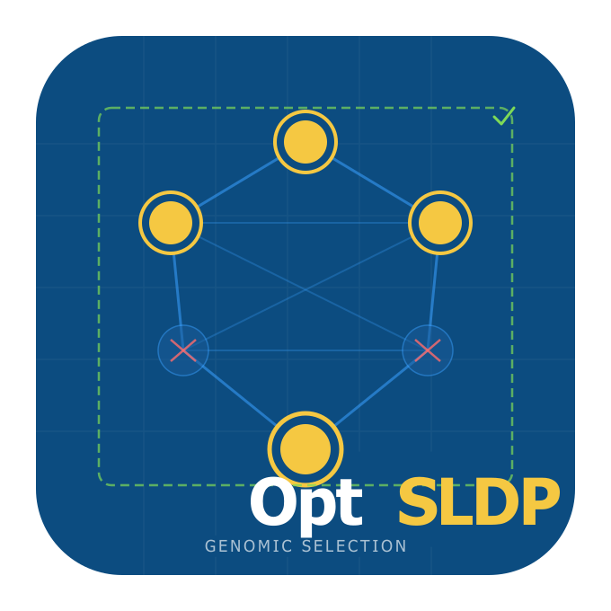

OptSLDP is an optimized and extended implementation of Selective Linkage Disequilibrium Pruning for genomic prediction panel construction. The core idea of SLDP — preserving all markers in strong LD with statistically important SNPs so that genomic models retain the full genetic signal around each QTL, while pruning redundant background markers — is retained from the original algorithm of Zhu et al. (2023). OptSLDP improves on that foundation in four concrete ways:
- Memory-safe chunked reading — genotype files are read in fixed-size row chunks with a pre-allocated output matrix, so peak RAM is proportional to one chunk rather than twice the full file.
-
Explicit per-chromosome garbage collection —
gc(FALSE)is called after each chromosome’s LD matrix is released in both the pre-pruning and background-pruning loops, preventing heap fragmentation across 20–30 chromosome passes. - Multi-trait union protection — screening and candidate selection run independently for each trait; the union of all per-trait candidate sets is expanded and protected, so every SNP important for any trait is retained in the final panel.
-
Covariate-adjusted marginal screening — phenotypes are residualised on shared covariates once before the SNP scan (equivalent to including covariates in every marginal regression but computed in a single
lm()call), which correctly adjusts effect estimates for population structure or other confounders.
OptSLDP is also inspired by the genome-wide association study-derived marker weighting approach of Akohoue et al. (2026) for blast resistance prediction in rice, and scales automatically from small in-memory panels to whole-genome sequencing datasets with more than 10 million SNPs.
Table of contents
- Installation
- Quick start
- Input formats
- Statistical background
- Multi-trait analysis
- Scale strategies
- Full pipeline walkthrough
- Function reference
- Output objects
- Memory and performance notes
- Documentation
- Citation
- Contributing
- License
- References
Installation
Install from GitHub with vignettes (recommended):
install.packages("remotes")
remotes::install_github("FAkohoue/OptSLDP",
build_vignettes = TRUE,
dependencies = TRUE
)Install without vignettes for a faster install:
remotes::install_github("FAkohoue/OptSLDP",
build_vignettes = FALSE,
dependencies = TRUE
)Optional dependencies installed automatically by dependencies = TRUE:
# VCF input support (Bioconductor)
if (!requireNamespace("BiocManager", quietly = TRUE))
install.packages("BiocManager")
BiocManager::install(c("VariantAnnotation", "GenomeInfoDb",
"SummarizedExperiment", "Biostrings", "S4Vectors"))
# Large-panel GDS backend (> 2 M SNPs, Bioconductor)
BiocManager::install(c("SNPRelate", "gdsfmt"))Bioconductor packages are not installed automatically by remotes — run the blocks above once if you need VCF support or plan to work with whole-genome panels.
Quick start
library(OptSLDP)
geno_file <- system.file("extdata", "example_genotypes_numeric.csv",
package = "OptSLDP")
pheno_file <- system.file("extdata", "example_phenotype.csv",
package = "OptSLDP")
# ── Single trait ──────────────────────────────────────────────────────────────
res <- run_sldp(
genotype_file = geno_file,
phenotype_file = pheno_file,
output_file = tempfile(fileext = ".csv"),
trait_col = "Trait1",
covar_cols = c("PC1", "PC2"),
mode = "A",
pval_threshold = 0.05
)
# Retained SNP panel
head(res$final_snp_info)
# Per-SNP screening statistics
head(res$screening_stats)
# Step-by-step SNP counts
print(res$pruning_stats)
# ── Multi-trait (union protection) ───────────────────────────────────────────
res_mt <- run_sldp(
genotype_file = geno_file,
phenotype_file = pheno_file,
output_file = tempfile(fileext = ".csv"),
trait_col = c("Trait1", "Trait2"),
covar_cols = c("PC1", "PC2"),
mode = "A",
pval_threshold = 0.05
)
# Per-trait screening results
names(res_mt$screening_stats) # "Trait1" "Trait2"
res_mt$candidate_snps_per_trait$Trait1
res_mt$candidate_snps_per_trait$Trait2
# Union of candidates that drove the protected set
length(res_mt$candidate_snps)Input formats
The user supplies two files: a genotype file and a phenotype file. The format of the genotype file is detected automatically from the file extension or can be set explicitly with format =.
Genotype file
| Format | Extension | format = |
|---|---|---|
| Numeric dosage |
.csv, .txt
|
"numeric" |
| HapMap | .hmp.txt |
"hapmap" |
| VCF / bgzipped VCF |
.vcf, .vcf.gz
|
"vcf" |
Numeric dosage format — one row per SNP, columns SNP, CHR, POS, REF, ALT followed by one column per sample, values in {0, 1, 2, NA}:
SNP,CHR,POS,REF,ALT,Line01,Line02,...
SNP001,1,10000,A,T,0,1,...
SNP002,1,20000,G,C,2,0,...HapMap format — standard 11-column header (rs#, alleles, chrom, pos, strand, assembly#, center, protLSID, assayLSID, panelLSID, QCcode) followed by sample columns containing two-character nucleotide calls (AA, AT, TT, NN for missing).
VCF — standard VCF v4.2. Both phased (0|1) and unphased (0/1) GT fields are accepted. Multi-allelic sites use the first ALT allele. Missing calls (./.) become NA.
Chromosome names with and without the chr prefix (chr1 vs 1) are normalised automatically at read time.
Phenotype file
A delimited file with one row per sample. Required columns:
| Column | Purpose | Parameter |
|---|---|---|
| Sample identifier | Matches genotype column names |
sample_col (default "Sample") |
| One or more trait columns | Numeric phenotype values |
trait_col (default "Trait1") |
| Optional covariates | Shared across all traits | covar_cols |
Sample,Trait1,Trait2,PC1,PC2
Line01,1.198,-0.319,0.807,-0.505
Line02,1.881, 0.151,-0.492, 0.167Sample alignment is handled internally. Samples present in the genotype file but absent from the phenotype file cause an informative error. Extra samples in the phenotype file are dropped with a message.
Statistical background
1. MAF filtering
The ALT allele frequency is estimated from the dosage matrix as:
\[\text{AF}_i = \frac{\sum_j g_{ij}}{2 n_j}\]
where \(g_{ij} \in \{0, 1, 2, \text{NA}\}\) is the dosage for SNP \(i\) in sample \(j\), and \(n_j\) is the number of non-missing samples for that SNP. The minor allele frequency is:
\[\text{MAF}_i = \min\!\left(\text{AF}_i,\; 1 - \text{AF}_i\right)\]
SNPs with \(\text{MAF}_i < \tau_{\text{maf}}\) (default 0.05) are removed before any further analysis.
2. Marginal SNP screening
For each SNP \(i\) a simple marginal linear regression is fitted:
\[y^* = \alpha + \beta_i\, g_i + \varepsilon\]
where \(y^*\) is the working phenotype (see below), \(g_i\) is the dosage vector for SNP \(i\), and \(\varepsilon \sim \mathcal{N}(0, \sigma^2 I)\).
Covariate adjustment. When covariates \(X_c\) are supplied, \(y\) is first projected onto the covariate space and the residuals are used as the working phenotype:
\[y^* = y - X_c\!\left(X_c^\top X_c\right)^{-1} X_c^\top y = M_{X_c}\, y\]
where \(M_{X_c}\) is the residual maker (annihilator) matrix. This is equivalent to fitting \(y \sim X_c + g_i\) and reading off the coefficient of \(g_i\), but residualisation is performed once before the SNP loop rather than re-fitting covariates for every SNP.
Reported statistics per SNP:
| Statistic | Formula |
|---|---|
| Effect size | \(\hat\beta_i = \frac{\text{Cov}(g_i, y^*)}{\text{Var}(g_i)}\) |
| Standard error | \(\widehat{\text{SE}}(\hat\beta_i) = \sqrt{\frac{\hat\sigma^2}{\sum_j(g_{ij} - \bar g_i)^2}}\) where \(\hat\sigma^2 = \frac{\text{RSS}}{n - 2}\) |
| z-score | \(z_i = \hat\beta_i \;/\; \widehat{\text{SE}}(\hat\beta_i)\) |
| P-value | \(p_i = 2\Pr\!\left(T_{n-2} > |z_i|\right)\) (two-tailed \(t\)-test) |
| PVE | \(R^2_i\) from the marginal regression |
| AF / MAF | as defined in §1 |
SNPs with fewer than 5 complete observations or zero variance receive NA for all statistical columns.
3. Candidate selection modes
Three modes control which SNPs enter the protected set:
Mode A — p-value threshold
\[\mathcal{C}_A = \left\{i : p_i \le \tau_p\right\}\]
Requires pval_threshold. Appropriate when a clear significance cutoff exists (e.g., Bonferroni or a permutation threshold).
Mode B — effect-size criteria
\[\mathcal{C}_B = \left\{i : |z_i| \ge \tau_z \;\text{[AND/OR]}\; R^2_i \ge \tau_{\text{pve}}\right\}\]
Requires at least one of z_threshold or pve_threshold. The threshold_logic argument ("AND" or "OR") controls how multiple criteria are combined. Use "OR" to capture SNPs with large effects regardless of significance, or "AND" to require both criteria simultaneously.
Mode C — hybrid
\[\mathcal{C}_C = \left\{i : p_i \le \tau_p \;\text{[AND/OR]}\; |z_i| \ge \tau_z \;\text{[AND/OR]}\; R^2_i \ge \tau_{\text{pve}}\right\}\]
Any combination of the three criteria, combined by threshold_logic.
4. Important SNP expansion
The candidate set \(\mathcal{C}\) is expanded into the full protected set \(\mathcal{I}\) in two layers for each candidate \(c\):
Layer 1 — positional window. Every SNP on the same chromosome within \(\pm w\) bp of \(c\) is added:
\[\mathcal{W}(c) = \left\{i : \text{chr}(i) = \text{chr}(c),\; |\text{pos}(i) - \text{pos}(c)| \le w\right\}\]
where \(w = w_{\text{kb}} \times 1000\) bp (default \(w_{\text{kb}} = 50\), so \(w = 50\,000\) bp on each side).
Layer 2 — LD neighbours (optional). Among the window SNPs \(\mathcal{W}(c)\), those with pairwise \(r^2\) against the focal candidate \(c\) at or above \(\tau_{\text{flag}}\) (default 0.90) are also added:
\[\mathcal{L}(c) = \left\{i \in \mathcal{W}(c) : r^2(i, c) \ge \tau_{\text{flag}}\right\}\]
The full protected set is the union over all candidates:
\[\mathcal{I} = \bigcup_{c \in \mathcal{C}} \left[\mathcal{W}(c) \cup \mathcal{L}(c)\right]\]
The \(r^2\) statistic used here is the squared Pearson correlation computed from the dosage matrix with pairwise-complete observations:
\[r^2(i, j) = \left[\frac{\text{Cov}(g_i, g_j)}{\sqrt{\text{Var}(g_i)\,\text{Var}(g_j)}}\right]^2\]
For the GDS strategy the correlation is computed by snpgdsLDMat() from the SNPRelate package, which streams genotypes from disk and returns the same statistic.
5. Background LD pruning
All SNPs outside \(\mathcal{I}\) form the background set \(\mathcal{B} = \Omega \setminus \mathcal{I}\) where \(\Omega\) is the full post-filter SNP set. A greedy forward-selection algorithm is applied chromosome-by-chromosome, processing SNPs in genomic position order:
For each chromosome:
Sort background SNPs by position
For i = 1, 2, …, |B_chr|:
If SNP i is still marked "keep":
Mark as "discard" every SNP j > i with r²(i, j) ≥ τ_genomeThe default genome-wide pruning threshold is \(\tau_{\text{genome}} = 0.80\).
The final retained panel is:
\[\text{Panel} = \mathcal{I} \;\cup\; \text{retained}(\mathcal{B})\]
For the GDS strategy the background pruning uses snpgdsPruneLD() from SNPRelate, which processes the chromosome in streaming blocks without loading the full \(r^2\) matrix. The equivalent threshold passed to snpgdsPruneLD is \(|r| \ge \sqrt{\tau_{\text{genome}}}\) because that function operates on the correlation coefficient rather than \(r^2\).
Multi-trait analysis
When trait_col is a character vector of length > 1, the pipeline runs separate screening for every trait and then takes the union of all per-trait candidate sets before expansion and pruning:
-
For each trait \(k \in \{1, \ldots, K\}\):
- Residualise \(y_k\) on the shared covariates independently.
- Run the full marginal scan → per-trait statistics \((\hat\beta^{(k)}, p^{(k)}, R^{2(k)})\).
- Apply the threshold criteria → per-trait candidate set \(\mathcal{C}^{(k)}\).
Form the union candidate set: \[\mathcal{C}^* = \bigcup_{k=1}^{K} \mathcal{C}^{(k)}\]
Expand \(\mathcal{C}^*\) into the protected set \(\mathcal{I}^*\) using the window and LD-neighbour rules (§4).
Prune the background \(\Omega \setminus \mathcal{I}^*\) (§5).
This guarantees that every SNP important for any trait is retained, while background pruning is performed once on the shared remaining set.
The return value in multi-trait mode includes: - $screening_stats — a named list of per-trait data.tables. - $candidate_snps_per_trait — a named list of per-trait candidate vectors. - $candidate_snps — the union across all traits.
# Access per-trait results
res$screening_stats$Trait1
res$screening_stats$Trait2
res$candidate_snps_per_trait$Trait2Scale strategies
The pipeline selects a scale strategy automatically based on the number of SNPs after MAF filtering. The strategy governs how \(r^2\) matrices are computed throughout the pipeline.
| Strategy | Trigger (default) | LD backend | Notes |
|---|---|---|---|
in_memory |
\(n \le 200\,000\) |
cor() on full matrix in RAM |
Fastest for small panels |
chunked |
\(200\,000 < n \le 2\,000\,000\) |
cor() per chromosome |
Bounds RAM to one chromosome |
gds |
\(n > 2\,000\,000\) |
snpgdsLDMat() from disk |
Requires SNPRelate |
Override with scale_strategy = "in_memory" / "chunked" / "gds". Adjust the automatic thresholds site-wide:
options(
optsldp.thresh_small = 1e5, # below this: in_memory
optsldp.thresh_medium = 1e6 # below this: chunked; above: gds
)GDS setup for large panels. The GDS strategy writes the genotype matrix to a binary SNPRelate GDS file once at the start of the pipeline. All subsequent LD queries stream genotypes from disk in blocks — the full matrix never lives in RAM simultaneously. All GDS file handles are tracked in a package-level registry and closed on exit or on error.
# Force GDS strategy and specify a persistent scratch directory
res <- run_sldp(
genotype_file = "wgs_panel.vcf.gz",
phenotype_file = "phenotype.csv",
output_file = "wgs_pruned.csv",
format = "vcf",
scale_strategy = "gds",
gds_dir = "/scratch/my_gds",
n_cores = 16
)Full pipeline walkthrough
The 12 steps executed by run_sldp() in order:
| Step | Action | Key parameter(s) |
|---|---|---|
| 1 | Read genotype file | format |
| 2 | Read phenotype, align samples |
sample_col, trait_col, covar_cols
|
| 3 | Select scale strategy, write GDS if needed |
scale_strategy, gds_dir, n_cores
|
| 4 | MAF filter | maf_threshold |
| 5 | High-LD pre-pruning (optional) |
preprune_large, preprune_r2
|
| 6 | Extract post-filter SNPs from GDS (GDS only) | — |
| 7 | Marginal screening + candidate selection |
mode, pval_threshold, z_threshold, pve_threshold, threshold_logic
|
| 8 | Important SNP expansion |
window_kb, include_ld_neighbors, r2_flag
|
| 9 | Background LD pruning |
r2_genome, slide_max_bp
|
| 10 | Merge important + retained background | — |
| 11 | Write pruned output file | output_format |
| 12 | Write pruning statistics (optional) |
stats_output_file, summary_output_file
|
Step 5 — high-LD pre-pruning. Before screening, near-duplicate SNPs (\(r^2 \ge \tau_{\text{preprune}}\), default 0.99) are removed chromosome-by-chromosome. This reduces the screening workload substantially for dense arrays without discarding any independent signal. The pre-pruning threshold \(\tau_{\text{preprune}}\) should be set very close to 1 — it is intended to catch perfect or near-perfect redundancy (e.g., duplicate probes, SNPs in complete disequilibrium) rather than biological LD.
Detailed example with all parameters:
res <- run_sldp(
# ── Files ──────────────────────────────────────────────────────────────────
genotype_file = "panel.hmp.txt",
phenotype_file = "phenotype.csv",
output_file = "panel_pruned.hmp.txt",
# ── Phenotype columns ──────────────────────────────────────────────────────
sample_col = "Line", # sample ID column name
trait_col = c("YLD", "HT"), # two traits: union protection
covar_cols = c("PC1", "PC2"), # shared covariates
# ── I/O formats ────────────────────────────────────────────────────────────
format = "hapmap",
output_format = "hapmap",
# ── Scale ──────────────────────────────────────────────────────────────────
scale_strategy = NULL, # auto-detect
gds_dir = tempdir(),
n_cores = 4L,
# ── Quality control ────────────────────────────────────────────────────────
maf_threshold = 0.05,
preprune_large = TRUE,
preprune_r2 = 0.99,
# ── Candidate selection (Mode C: p-value OR large z) ───────────────────────
mode = "C",
pval_threshold = 0.001,
z_threshold = 3.5,
threshold_logic = "OR",
# ── Important SNP protection ───────────────────────────────────────────────
window_kb = 50,
include_ld_neighbors = TRUE,
r2_flag = 0.90,
# ── Background pruning ─────────────────────────────────────────────────────
r2_genome = 0.80,
slide_max_bp = 1000000L,
# ── Reporting ──────────────────────────────────────────────────────────────
stats_output_file = "pruning_stats.csv",
summary_output_file = "pruning_summary.txt",
verbose = TRUE
)Function reference
Main pipeline
| Function | Description |
|---|---|
run_sldp() |
End-to-end pipeline. Two files in, one file out. |
extract_final_geno() |
Re-extract the genotype matrix from a GDS file after a GDS-strategy run. |
I/O
| Function | Description |
|---|---|
read_genotype() |
Auto-dispatch genotype reader. |
read_numeric_genotype() |
Read numeric dosage CSV/TXT. Chunked for files > 200 K rows. |
read_hapmap_genotype() |
Read HapMap format. Chunked for large files. |
read_vcf_genotype() |
Read VCF/VCF.gz via VariantAnnotation. |
read_phenotype() |
Read phenotype file, align to genotype samples, return vector (single trait) or matrix (multi-trait). |
write_numeric_genotype() |
Write numeric dosage CSV. |
write_hapmap_genotype() |
Write HapMap format. |
write_pruning_report() |
Write pruning statistics CSV and optional plain-text summary. |
Quality control
| Function | Description |
|---|---|
compute_maf() |
Compute AF and MAF for every SNP. |
filter_snps_by_maf() |
Remove SNPs below MAF threshold. |
preprune_high_ld() |
Chromosome-wise near-duplicate removal at high \(r^2\) threshold. |
Screening and selection
| Function | Description |
|---|---|
compute_screening_stats() |
Marginal regressions for all SNPs. Accepts a phenotype vector (single trait) or matrix (multi-trait → named list). |
select_candidate_snps() |
Apply mode A / B / C thresholds to a stats table. |
LD and pruning
| Function | Description |
|---|---|
compute_r2_subset() |
Pairwise \(r^2\) matrix for a SNP subset. Scale-aware. |
find_ld_neighbors() |
LD neighbours of a focal SNP. Scale-aware. |
expand_important_snps() |
Positional + LD expansion of candidate set. |
prune_background_snps() |
Greedy chromosome-wise LD pruning of non-protected SNPs. |
Output objects
run_sldp() returns a named list:
| Element | Type | Description |
|---|---|---|
final_snp_info |
data.table |
SNP metadata (SNP, CHR, POS, REF, ALT) for all retained markers, ordered by CHR then POS. |
final_geno_mat |
numeric matrix | Retained genotype matrix (SNPs × samples, 0/1/2/NA). NULL for GDS runs — use extract_final_geno(). |
screening_stats |
data.table or named list |
Per-SNP statistics table (single trait) or named list of tables (multi-trait). Columns: SNP, beta, SE, z_score, P.value, PVE, AF, MAF. |
candidate_snps_per_trait |
named list or NULL
|
Per-trait candidate SNP ID vectors. NULL in single-trait runs. |
candidate_snps |
character vector | Union of candidate SNPs across all traits (or the single-trait set). |
important_snps |
character vector | Full protected set: candidates + positional window + LD neighbours. |
background_retained |
character vector | Background SNPs retained after LD pruning. |
pruning_stats |
data.table |
Step-by-step SNP counts with columns step, n_before, n_after, n_removed, details. |
output_file |
character | Path to the written output genotype file. |
scale_strategy |
character | Strategy used: "in_memory", "chunked", or "gds". |
Memory and performance notes
Chunked genotype reading
For genotype files with more than 200 000 rows (configurable via chunk_threshold), read_numeric_genotype() and read_hapmap_genotype() use a two-pass strategy:
-
Pass 1 — header-only read (
nrows = 0) to determine column names and dimensions. A second single-column read counts total rows cheaply. -
Pre-allocation — the full output matrix is allocated once using
matrix(NA_real_, nrow = n_rows, ncol = n_samples). -
Pass 2 — data rows are read in chunks of
chunk_rows = 50 000and written directly into the pre-allocated matrix slices.
Peak RAM is proportional to one chunk rather than twice the full file (the naive fread → as.matrix path creates both objects simultaneously). For a 500 K × 3 K panel this reduces peak usage from ~12 GB to ~400 MB during the read step.
Explicit garbage collection
gc(FALSE) is called immediately after each chunk is released (in both genotype readers) and after each chromosome’s \(r^2\) matrix is released (in preprune_high_ld() and prune_background_snps()). This prevents stale allocations from accumulating across 20–30 chromosomes in the greedy pruning loops and makes peak RSS track the working set more closely.
Parallelism
The n_cores parameter is passed to SNPRelate functions in the GDS strategy (snpgdsLDMat, snpgdsPruneLD, snpgdsSNPRateFreq). Marginal regressions in the screening step are single-threaded because each regression is very fast and the overhead of parallelising 40 K–200 K short lm() calls generally exceeds the gain.
Documentation
Full documentation, function reference, and tutorials are available at:
https://FAkohoue.github.io/OptSLDP/
To read the vignette after installation:
vignette("OptSLDP-introduction", package = "OptSLDP")Citation
If you use OptSLDP in published research, please cite:
Akohoue, F. (2026).
OptSLDP: An Optimized Selective Linkage Disequilibrium Pruning Pipeline for Genomic Prediction.
R package version 0.2.0.
https://github.com/FAkohoue/OptSLDPYou should also cite the underlying methodological papers:
Zhu D, Zhao Y, Zhang R, Wu H, Cai G, Wu Z, Wang Y, Hu X (2023).
Genomic prediction based on selective linkage disequilibrium pruning of
low-coverage whole-genome sequence variants in a pure Duroc population.
Genetics Selection Evolution, 55(1), 72.
https://doi.org/10.1186/s12711-023-00843-w
Akohoue F, Herrera CC, Balanta SJC, et al. (2026).
Enhancing genomic prediction ability of blast resistance using genome-wide
association study-derived marker weights in two rice (Oryza sativa L.)
populations. Theoretical and Applied Genetics, 139, 52.
https://doi.org/10.1007/s00122-026-05159-zContributing
Issues, bug reports, and feature suggestions are welcome:
https://github.com/FAkohoue/OptSLDP/issues
References
Zhu D, Zhao Y, Zhang R, Wu H, Cai G, Wu Z, Wang Y, Hu X (2023). Genomic prediction based on selective linkage disequilibrium pruning of low-coverage whole-genome sequence variants in a pure Duroc population. Genetics Selection Evolution, 55(1), 72. https://doi.org/10.1186/s12711-023-00843-w
Akohoue F, Herrera CC, Balanta SJC, et al. (2026). Enhancing genomic prediction ability of blast resistance using genome-wide association study-derived marker weights in two rice (Oryza sativa L.) populations. Theoretical and Applied Genetics, 139, 52. https://doi.org/10.1007/s00122-026-05159-z